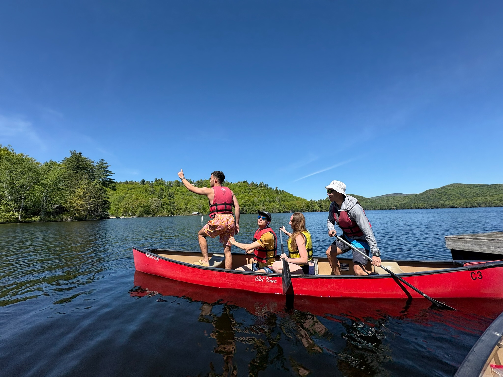
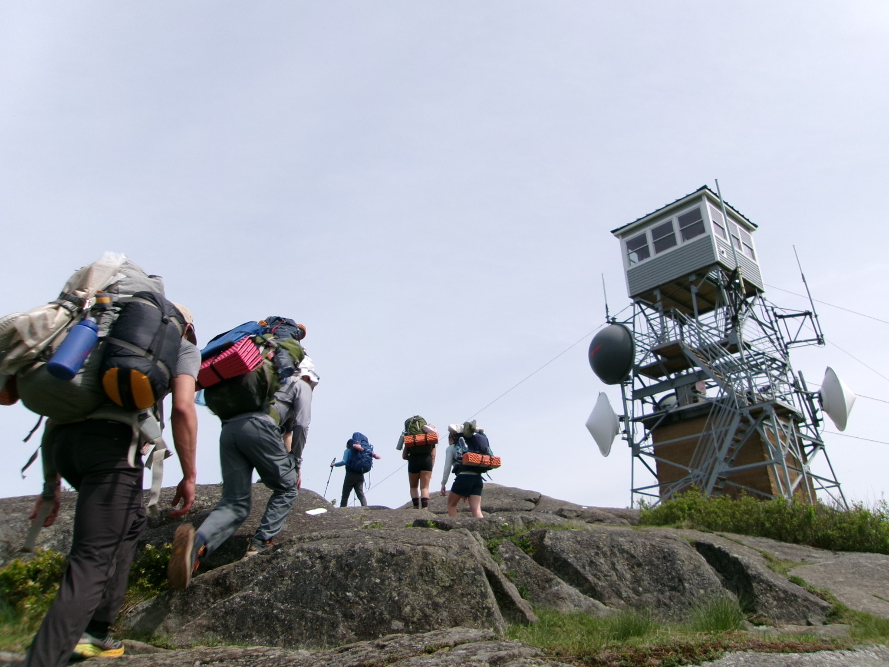
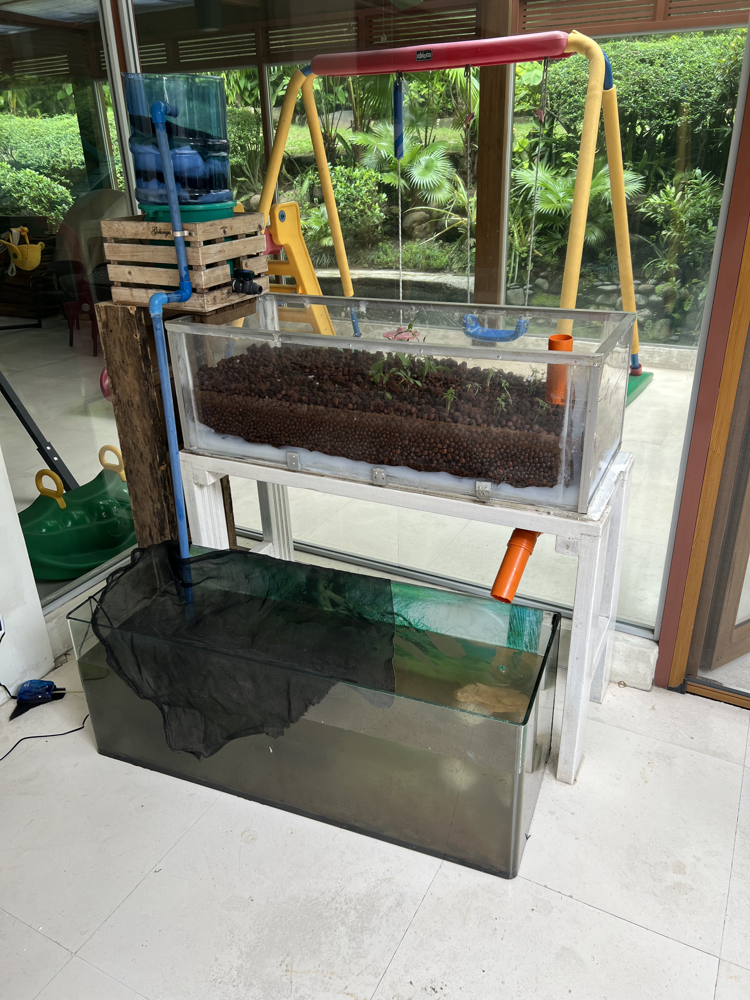
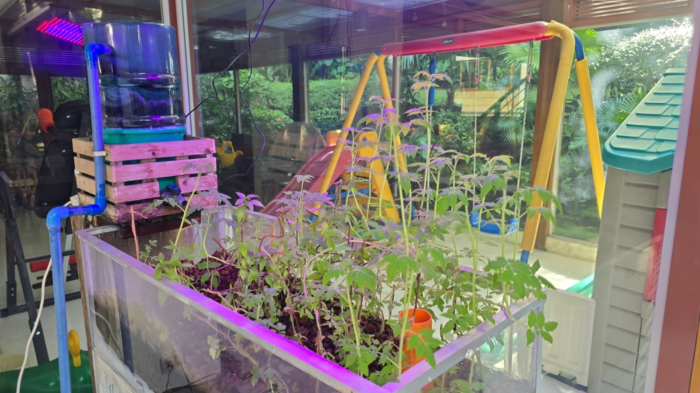
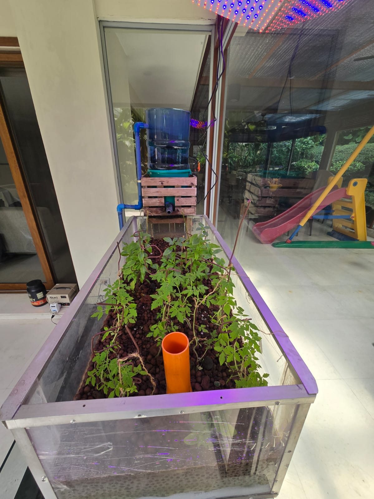
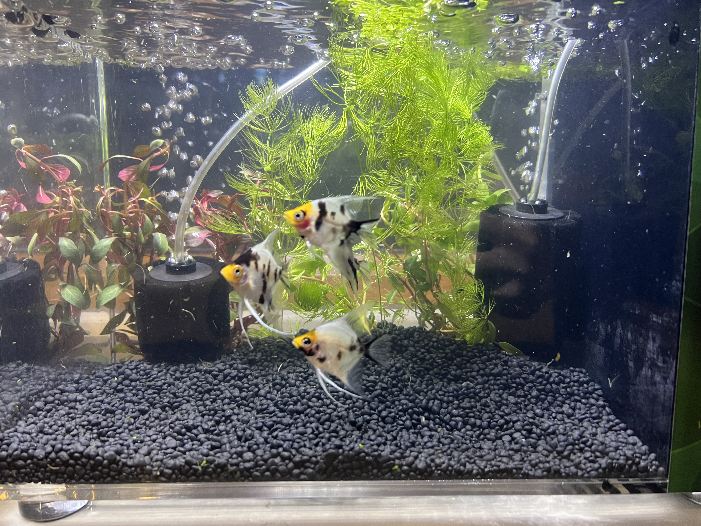
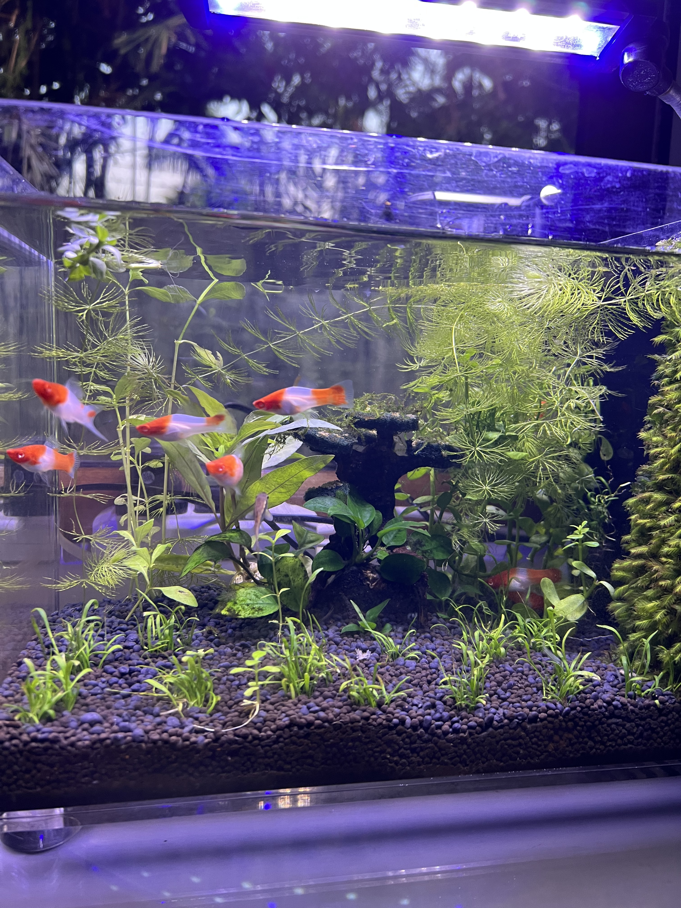
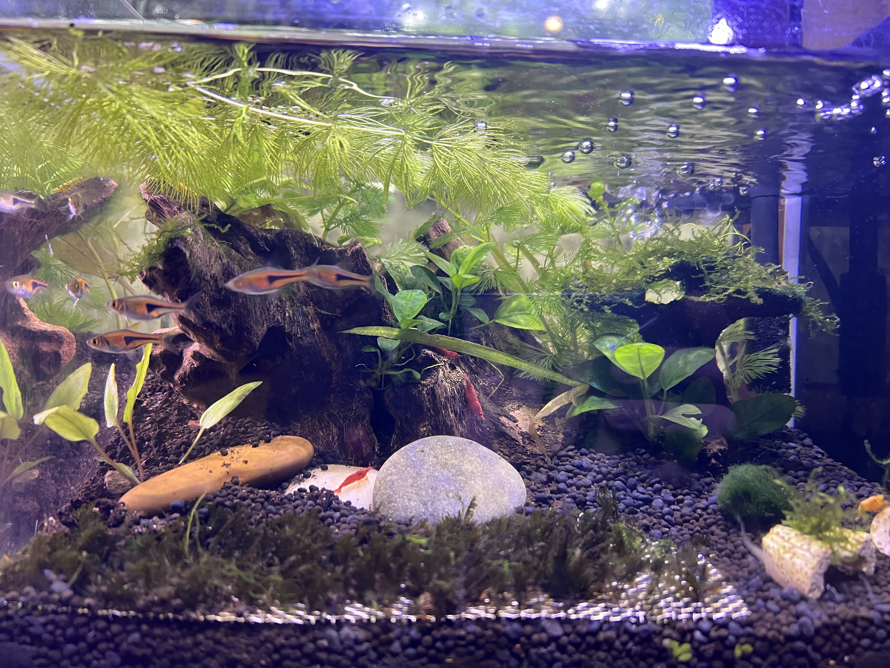

Swipe to see more
Catan
The best way to wind down after a long day. Former #1 1v1 Catan player in the Philippines.



Swipe to see more
FOP
Leading trail hikes & canoeing trips, guiding & mentoring incoming Harvard students for a smooth transition into college life. Wilderness First Aid & Lifeguard certified.



Swipe to see more
Aquaponics
Interested in engineering self-sustaining systems that provide both a source of protein and vegetables.



Swipe to see more
Aquascaping
Designing underwater landscapes.